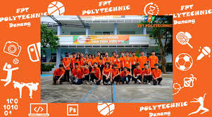

Giới thiệu Trường Cao đẳng FPT Polytechnic

Giới thiệu Trường Cao đẳng FPT Polytechnic

Trường Cao đẳng FPT Polytechnic được thực hiện đào tạo và cấp bằng Cao đẳng nghề theo Quyết định của Tổng cục dạy nghề bắt đầu từ ngày 01/07/2010. Trường hướng tới mục tiêu cung cấp kỹ năng nghề nghiệp chất lượng cao cho người học, đảm bảo được tính cạnh tranh trong môi trường phát triển ngày càng cao. Với nhận định nền kinh tế Việt Nam đang phát triển mạnh mẽ trong đó có sự đóng góp to lớn từ trên 500.000 doanh nghiệp vừa và nhỏ quy mô từ 10 đến 200 nhân viên, FPT Polytechnic nhắm tới mục tiêu cung cấp nguồn nhân lực được đào tạo tốt cho nhu cầu phát triển của không chỉ các doanh nghiệp lớn mà còn cho các doanh nghiệp này. Hướng tới người học chung trên toàn Việt Nam, chương trình cao đẳng của trường được thiết kế dựa trên những kỹ năng thiết yếu nhất để làm việc và tương thích với các hệ thống đào tạo tiên tiến trên thế giới. Xin chào mừng các bạn đến với Hệ Cao đẳng thực hành thuộc Trường Đại học FPT,- FPT Polytechnic, hệ thống đào tạo tiên tiến dựa trên sức mạnh của công nghệ thông tin. Hiện tại đã có hàng chục nghìn sinh viên trưởng thành và lập nghiệp theo các chương trình đào tạo của chúng tôi. Tại sao lại có nhiều sinh viên theo học với chúng tôi đến vậy? Thứ nhất, với tiêu chí hàng đầu “Thực học – Thực nghiệp”, chúng tôi mong muốn được cùng các sinh viên cùng khởi tạo sự nghiệp tại FPT Polytechnic. Chúng tôi tin tưởng rằng với quyết tâm học tập, dám đổi thay mình bằng cách học tập không ngừng, sinh viên sẽ nhanh chóng thuần thục các kỹ năng thực tế đòi hỏi của công việc và từ đó xây dựng sự nghiệp của mình. Thứ hai, chúng tôi hướng tới việc sử dụng thực tiễn làm bài học theo phương pháp học tập qua dự án (project-based-training). Theo đó, sinh viên sẽ được trao đồ án ngay từ đầu mỗi học kỳ và mỗi bài học thực tế (case-study) sẽ giải quyết các vấn đề đặt ra từ doanh nghiệp. Theo đó, mỗi năm học tập cũng Thứ ba, là thành viên của FPT, tập đoàn lớn nhất về Công nghệ thông tin ở Việt Nam, chúng tôi muốn chia sẻ các thành công và kinh nghiệm của mình với các bạn sinh viên. FPT Polytechnic thực hiện chiến lược “go-mass” (hướng tới đại chúng) nhằm đáp ứng nhu cầu học tập và lập nghiệp của đa số các sinh viên dựa trên việc đào tạo các ngành nghề thiết yếu cho nhu cầu xã hội. Cuối cùng, chúng tôi hy vọng các bạn có thể chia sẻ với chúng tôi mục tiêu “Thực học – Thực nghiệp” vì sự phát triển bền vững của mỗi cá nhân, gia đình và đất nước.